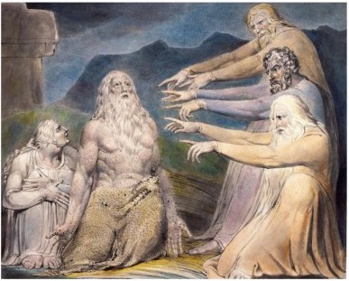

Job Rebuked by his Friends
1. Free will - It’s not God's fault; you somehow deserve it. Asked why God allows cruelty against children, Pope Francis responded that people have free will; interestingly, the abuser has free will, not the abused.
2. Redemptive - God tests us to find the limits of our faith.
3. Mystery - It's all part of the plan that you can’t understand.
4. Divine love - God punishes those he loves. (My favorite)
5. Deuteronomistic - Group punishment for the sin of one/a few; namely, the failure of a ruler to obey God (as interpreted by priests) - a theory devised by … priests!
6. Apocalyptic - The Zoroastrian (Persian) idea that the world is dualistic - either good or evil - and that now, since no other theory seems valid, it is dominated by evil. But suffering will be vanquished at the end of time, when the Davidic Messiah will expel the strangers, resurrect the dead, reward the good, punish the evil, and rule in righteousness until Judgment Day. (Don’t hold your breath.)
~~~~~~~~